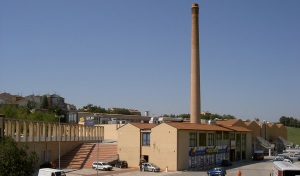

Pallavicino creek
Pallavicino creek gets his name from the Marchese Stefano Ludovico Pallavicino, who bought it in 1824 in an auction from the Church. The "Vallato" flows from Moie down to the Granita creek in Jesi. Vallato's main function among the centuries has been spinning the wheels of the mills throughout his track up to the south-eastern walls of the city. According to some historic documents of the vallesina, the creek's force has been used by mills, drains and valches from 1295. In the early 1400s, Jesi already had 4 mills in the Esino.
Once upon a time...

Pallavicino trench nearby Portavalle.

Pallavicino drain

wheels on the vallato

Santa Caterina alle Valche Church
Location: Via Santa Maria del Piano, Jesi
Built in the 16th century
According to tradition, Santa Caterina D’Alessandria died as a martyr tied to a wheel. The worship of Santa Caterina is linked to factories, because of the popular veneration for saintly protectors of workers.
The church of “Santa Caterina alle Valche” is situated along Via Clementina. It was built in the 16th century, when, it was named “Santa Maria della Vittoria” after the victory in the battle of Lepanto. The church was built on the land of the noble Ripanti family. In the 18thcentury the Mancini family bought the church where they put a painting of Santa Caterina. Because of this painting the citizens of Jesi renamed the church “Santa Caterina delle Valche” because on 25th November – the saint’s day - a solemn Mass was celebrated in the church which was located not far from “Gualcheria” area.
The Greek-cross shaped building is made of clay-brick. In the centre of the churchthere is an octagonal lantern and also four windows. The octagon, in the medieval tradition, is often related to a baptistery that alludes to water purification. There is plenty of water in the area, in fact we can also find an artificial canal, which is almost completely buriednowadays. The principal facade is pointed towards the city with the entrance doorraised by 80 cm above the inner floor. On the right facade there is a bell tower with a sloping roof and in the arch there is a little bell.
Once upon a time...

A detail of the Church's lantern

"Santa Caterina d'Alessandria", preserved inside the church

The Furnace
Built between 1740 and 1742
Location: Via Clementina (today Via Roma)
The Furnace was built along Via Clementina between 1740 and 1742, probably because of the opening of the new road, desired by Pope Clemente XII, that linked Rome to the Port of Ancona. The furnace area was also known as Valche or Gualchiere area, because there were some factories called “le Gualche”, where the employees dedicated themselves to the production of felt.
For over 180 years a brick chimney, still visible today, preserves with its grandeur the memory of the old furnace and of the ancient brickworks.
Once upon a time...

Ordinary work into the furnace
The furnace's chimney
Furnace workers

The Ripanti paper factory
Founder: Ripanti
Setted up in: 1806
Location: Via Roma
In 1806 the noble Ripanti family decided to build a paper factory in Jesi. The village that developed around it, was called “ Borgo Cartiera”.
A few years later the industrial production was diversified and new processes such as the forging of copper were introduced. In addition, in the surrounding area, the Ripanti family also possessed tobacco, oil and felt mills.
The earliest information about the paper factory dates back to 1840, because antique documents demonstrate intervention by some specialists from Fabriano. The paper produced was obtained from rags, exploiting the labour of adults and children. In 1870 the building was automated and a machine which reduced the number of workers was installed. Later on in the 1880s, there was a shift from the use of hydraulic energy to steam power.
During the fascist period the production of white and colour paper ended and was replaced by the production of fine paper for cigarettes. After the Second World War the paper factory stopped production and in 1950 it closed.

The ropers - 18th-19th century
The hemp plant comes from Central Asia. In Italy it was cultivated in Emilia-Romagna, Piemonte and the area around Naples thanks to the availability of water sources and for the favourable climate conditions.
Firstly, the hemp was harvested and sorted into bundles of similar lengths. After about ten days the bundles were removed, washed and dried. In this way the hemp fibre was ready for market and to be processed by the rope-maker.
The hemp process included the use of many tools through which the threads were braided and re-twisted to form rope.
In Jesi every rope-maker occupied a delimited space in the Prado. The area included the zone surrounding the Grammercato, the Gallodoro and from Porta Valle to the railway station. The Prado Piccolo was the area of the Prado in front of the little church of San Sebastiano. Another zone in which the activities of the rope makers took place was the Prado Grande (The present-day park near Via dei Cordai).
Once upon a time...

Hand-woven rope

A roper

Working ropers

The "Filanda Mancini"
Founder: Pasquale Mancini
Location: Via dei Macelli (today Via Castelfidardo)
Setted up in 1837
In Jesi the first Silk Spinning Mill was set up in 1837by Pasquale Mancini in Via dei Macelli (today Via Castelfidardo). It was a rectangular multi-storey building. On the ground floor there were the warehouses while the production area was on the first floor with high arched windows which improved ventilation and avoided the stagnation of the vapour produced from the boiling of the silkworms.
After the great development of the mill until the end of the nineteenth century, the Mancini Silk Mill, like many others, fell into financial difficulty during the 1930s. The original building was renovated after the Second World War and rebuilt as private flats.
Once upon a time...

Working in the Filanda

Pasquale Mancini's heirs' castle in contrada Montecappone

The match factory
Founder: Schiavoni & Ponzelli
Location: Via Castelfidardo
Setted up in 1873
In 1873, along the present-day Castelfidardo Street in Jesi, two industrialists called Sergio Schiavoni and Giovanni Ponzelli opened a matches factory, which joined the “Società Anonima Fabbriche Riunite di Fiammiferi” of Milano in 1898.
The factory occupied an area of about 3,000 square metres which produced two billion matches annually.
At the beginning of the 20th century there were 161 employees , especially women, as well as 50 workers who packed matchstick boxes at home.
In 1937 la Società Anonima Fabbriche Riunite I Fiammiferi, that included the Jesi factory, became part of S.A.F.F.A. in Milan. In Jesi wooden kitchen matches were produced. Over time the factory suffered a more significant crisis and, for this reason, new products such as the “ cerini” and “svedesi” matchsticks were introduced but this initiative did not help the destiny of the factory, which closed on 3rd May 1988.
Nowadays, the brick chimney is still intact, whereas the original buildings were was restructured during the 1990s.
Once upon a time...

An employee at work

The matches made from the factory

Saffa's shop window

The waste silk mill
The waste-silk mill, built in Jesi along the ‘’Vallato’’ canal, was an important factory where the stranding and spinning of the silk waste took place, the leftovers of the working process of the silk spinning mill. It was founded by the Industrial and Commercial Bank of Bologna in 1873 and started its activity in 1875.
In 1884 the mill was acquired by the Engineer Giuseppe Bonacossa and his nephews. Secondo, one of his nephews, gave a boost to production by renovating the plant and reorganising the working-processes.
During the first years of production the workforce counted 39 men, 184 women and 77 children, but by 1891 the waste-silk mill employed 102 men, 530 women(32 under fifteen-years old) and production increased considerably.
Production was non-stop with employees working 24 hours a day. The finished goods were exported to Europe and Asia.
The 1930 recession did not spare Jesi, where production was badly hit. After suffering considerable damage during World War 2, the Waste-silk Mill continued output until 2002 when it was closed definitively.
Once upon a time...

Società Anonima Cardatura e Filatura dei Cascami di Seta in the 1800s

Employees in the 1920s

The Guerri Company
The Guerri Company, the first of its kind in Italy, was created in 1898 thanks to Giuseppe Guerri who obtained permission from the Jesi City Hall to set up a little workshop specialised in building agricultural machines inside the “Appannaggio’’.
When the amount of work increased, thanks to favourable market conditions, the site needed to expand so the factory was moved close to the present-day railway station where it grew from ten/fifteen workers to about four hundred.
The finished products included ploughs, seeders, fodder balers, fodder cutters, harrows, weeders, straw lifters and mark-pressers.
After many productive years the Guerri Company also suffered the consequences of the 1929 economic crash when the number of employees began to fall considerably. Thanks to the economic revival and during the Second World War around 200 workers were employed.
Despite the fact that the war-time events caused major damage to the factory, it continued its production in a reduced form.
The premature death of the founder and, later, his son Guerrino, the obsolete equipment and the lack of technological innovation led to the company’s rapid decline.
A group of ex-employees, organised in a cooperative, tried to keep the company alive but the praiseworthy initiative proved unsuccessful.
Once upon a time...

View of the "Fabbrica di Macchine Agricole" and of the steel and cast iron foundry. It has been the industry which let Italy being less subjected to importation of foreign countries' agrarian machines

Giuseppe Guerri's residence in via XXIV Maggio. With more than 10.000 sqm indoor and a total surface of about 20.000 sqm, it has been longwidendly the biggest building of the city

Filanda Bigi - Agostinelli
Back in 1906 Silvio Bigi opened a spinning mill along Viale della Stazione (nowadays called Viale Trieste). However, a few decades later, due to the devaluation of the Italian lira and economic recession, the Spinning Mill failed and Antonio Agostinelli’s son, Mariano, bought it.
Over time the company expanded and managed to acquire many Silk spinning mills situated beyond the River Esino area in towns such as Recanati and Pergola.
During World War II, the retreating Germans mined the most important infrastructure in Jesi , heavily damaging or even completely destroying numerous factories including The Bigi-Agostinelli Silk mill.
Despite the damage, thanks to the charisma of Mariano Agostinelli, who stood out as one of the most important representatives of the business community, his Silk Mill recovered quickly.
Thanks to this productive recovery, the ISA (Industrie Seriche Agostinelli) was founded, but life was not easy.
In fact, a few years later, the company came up against strong competition from nylon and Asia, which offered high-quality, low-cost fabrics. Given his age and the difficulty of silk production on a competitive market, in 1963 Mariano Agostinelli decided to halt production.
Once upon a time...

The filanda in the 1930s

Glimpse of the alley behind the Filanda

Sight of the Filanda and of its typical furnace tower

The S.I.M.A.
Name: LA S.I.M.A.-Società Iesina Macchine Agrarie (produzione macchinari dediti all'oleodinamica).
Setted up in 1926
Location: Zona Prato, Vicino Portavalle.
Sima (Società Jesina Macchine Agrarie) was set up in 1926, after the failure of Vincenzo Zappelli’s factory.The new company started to grow thanks to its director Gustavo Rigo and the start of agricultural mechanisation.
The plough production was later converted into producing machinery for olive pressing.
Despite experiencing serious damage during the Second World War during which much machinery was destroyed, the SIMA company managed to recover and grow sufficiently to become the most important industry in Jesi.
The 1959 crisis, which affected the agricultural machinery sector, had negative effects on the company. However, SIMA managed to recover thanks to the aid of shareholders in Turin. In the following years SIMA specialised in the production of oleodynamic machines and the number of employees grew considerably from 250 to 500.
The productive recovery and the relevance of the SIMA brand led to the opening of the “SIMA Espanola” in Madrid and decided the transfer of the business to its new site on Via Roncaglia inJesi.
Recently, the latest economic crises and unfortunate investments has had a negative impact on the company’s industrial future.
Once upon a time...

The block of offices and the SIMA entrance in Via Mazzini

The machines sector (1950)

Two brochures used by SIMA in the postwar period for trade shows

Albanesi paper mill
Founder: Alberto Albanesi
Location: Via Santa Maria del Piano 0, Jesi
Setted up in 1937
Shutted down in 1990
Alberto Albanesi’s Paper Mill, opened in 1937, represented one of the last manufacturing activities established in Jesi, and occupied the area of a spinning mill operating since 1873.
The factory was made up of two adjacent buildings; the Paper Mill itself was located in Via Santa Maria 90; while the offices were situated at the crossroads between Via Santa Maria and Via Guglielmo Marconi.
Between 1933 and 1940 Alberto Albanesi acquired most of the available Spinning Mills in Jesi and turned the Spinning Mill into a new and efficient Paper Mill. Around 1960 it was still one of the most important industries in the city: producing cardboard, packaging paper and working recycled paper.
The Paper Mill closed in 1990.
Since 1999 the building has housed the International Comics School, a Comics and Screenplay Studio attended by large numbers of students from all over Italy.
Once upon a time...

Paper mills' stand in the "settimana Jesina" (jesine week),1941.

Chess packageing room
Bibliografia
- www.piccolabibliotecajesina.it
- Wikipedia.it
- www.focus Junior.it
- Luconi G., Cocola P., Conoscere Jesi, Jesi 2008
- Formiconi A., La seta nelle Marche, Jesi 2013
- Gaudenzi G., Storia dell’industria jesina e movimento economico connesso, Jesi 1984